FINDING SOLUTIONS TO EXISTING PROBLEMS
A one-week solo UI/UX sprint reimagining WashU's campus GrubHub app, from a cluttered, inconsistent interface into a calmer, more legible ordering experience.
Overview
This project came from Product Space, a product design organization at WashU, as a one-week solo sprint with a single, wide-open prompt: redesign the UI of our campus GrubHub app. No feature brief, no stakeholder requirements, just an interface that every student on campus already used daily and had opinions about. With one week and no team to split the work with, I owned research, wireframes, and final UI myself, start to finish.
The Original App
Before redesigning anything, I recorded and audited the app as it actually exists today, screen by screen, color by color, so the redesign would be fixing real problems instead of imagined ones.
Seven colors, plus a dark green offer tag, with several doing the same job: orange is both the brand color and an error-like "Closed" status; mint is both the main "Add to bag" action and the "Open now" status. Meanwhile purple, the color already driving every real interaction in the app, links, Reorder, radio buttons, the back chevron, is never used for the main call to action.
Purple already drives most interactions in the current app. Making it the primary color consolidates what's already there instead of rebranding from scratch.
Research
Since there was no team and no time for a full research phase, I leaned on two fast, parallel tracks: a short survey of WashU students about their actual GrubHub habits and frustrations, and a competitive audit of apps that already solve pieces of this problem well.
Student Survey
Twelve questions, under three minutes, meant to travel through class group chats, residence hall GroupMes, and club Slacks.
- What year are you?First year, sophomore, junior, senior, grad
- How many times a week do you order through Grubhub?0–2, 3–5, 6–10, 10+
- When do you usually order?Before class, between classes, lunch, dinner, late night (select all)
- When you open the app, do you usually already know what you want?Always, usually, sometimes, rarely
- How often do you order the same item from the same place?Almost always, often, sometimes, rarely
- Have you ever found out about a new menu item from something other than the app?Yes, no, not sure
- How easy is it to find a specific item on a long menu?1–5 scale
- Have you ever wanted to reorder something from more than a week ago?Yes and I found it, yes and I couldn't, no
- What matters most when you choose where to eat?Wait time, meal swipe eligible, price, distance, craving (rank top 3)
- How would you describe the app's look in one word?Open text
- What's the most frustrating part of ordering?Open text
- If you could add one feature, what would it be?Open text
How I planned to analyze it:
Group the open-text answers into themes,
decision fatigue, time pressure, discovery, order history, visual clutter, and count
responses per theme to turn them into research stats.
"I get the same Subway order literally every day because scrolling through everything else takes too long. I didn't know LaJoy's had new drinks until my roommate told me."
"I wanted to reorder a wrap from like two weeks ago and it just wasn't in my orders anymore. I had to rebuild it from memory."
Word for the app: "Cluttered""I only have 15 minutes between classes, so I just want to see what's open and fast. Half the time I pick somewhere and the wait is 25 minutes."
Feature wish: "Filter by what's ready soonest""Menus are super long and everything is in weird caps. I give up and just walk to the dining hall."
Word for the app: "Confusing"The Pain Points
Design Opportunities From Other Apps
I audited three apps I myself, and other users already use for food ordering, looking specifically for patterns worth borrowing rather than a full competitive teardown.
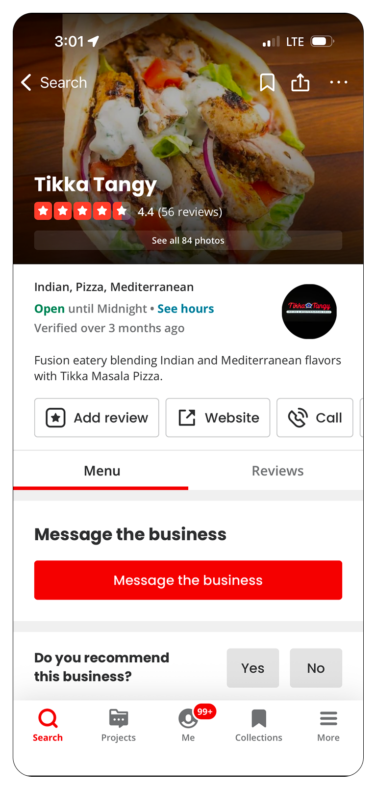
- Rating, price range, and cuisine tags surfaced right at the top of a restaurant page
- Photo-forward layout that makes a menu feel appetizing, not just functional
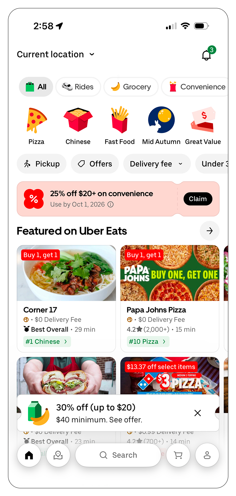
- Horizontal category tabs let users filter by cuisine without leaving the home screen
- A single hero promo banner instead of competing banners fighting for attention
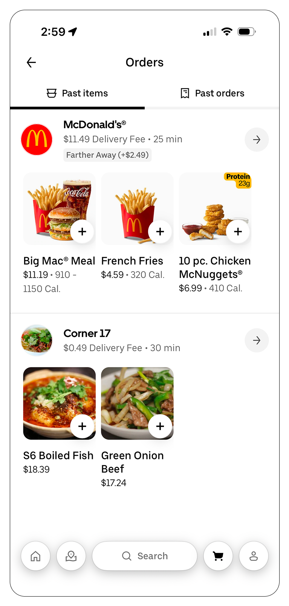
- Past orders and current orders live in one unified list, sorted by recency
- A one-tap "reorder" action on every past order, no rebuilding a cart from scratch
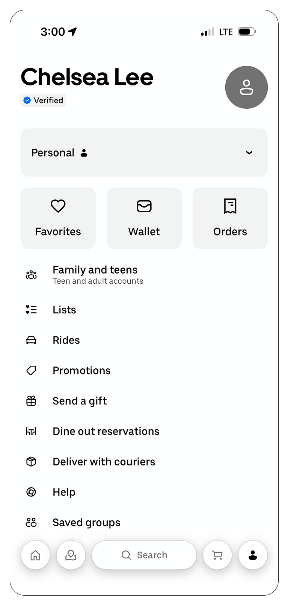
- Account hub organized into clear destinations: favorites, wallet, and orders
- Consistent row style and iconography across every settings-style list
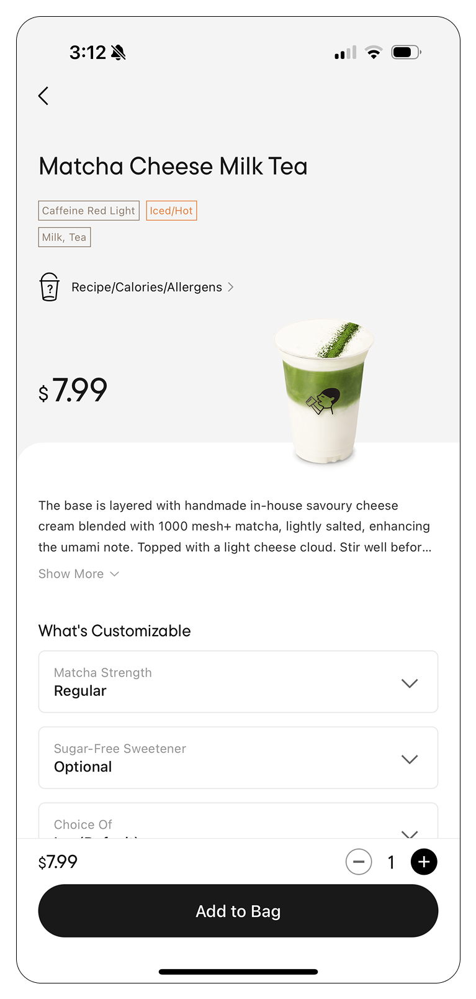
- Large hero image and price anchored at the top of the item-detail screen
- Customization options exposed inline instead of hidden behind a second tap
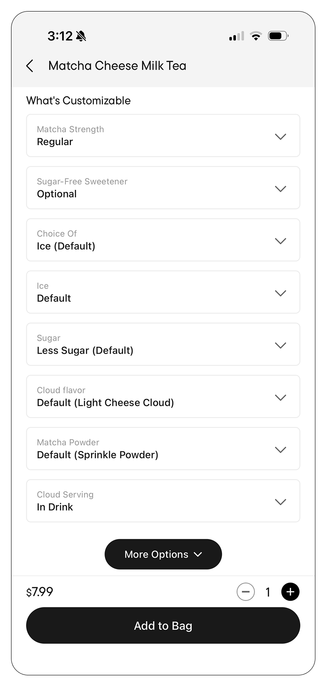
- Customization submenu grouped by option type, each with clear selected-state styling
- Sticky bottom action button so "add to order" never scrolls out of reach
User Persona
Jordan Parker
Sophomore, WashU
Jordan orders GrubHub between classes almost every day, usually while walking across campus. She wants to order fast, reorder her usual without thinking, and know exactly when her food will be ready without checking three different screens.
- Order in under a minute between classes
- Reorder go-to items with minimal taps
- See real-time order status at a glance
- Cluttered menus slow down quick decisions
- Hard to tell when an order is actually ready
- Customizing an item feels like filling out a form
The App
The final design keeps GrubHub's core ordering flow intact but rebuilds it around a calmer purple-and-white system, clearer hierarchy, and a menu that's actually easy to scan. Below is the full prototype walkthrough, followed by the main screens.
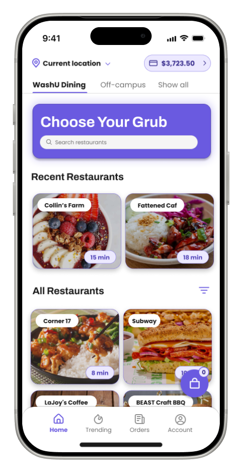
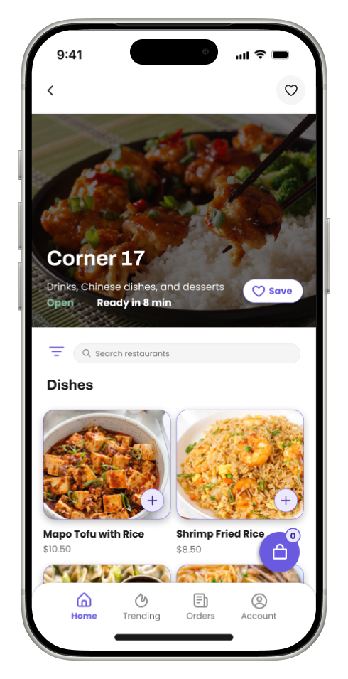
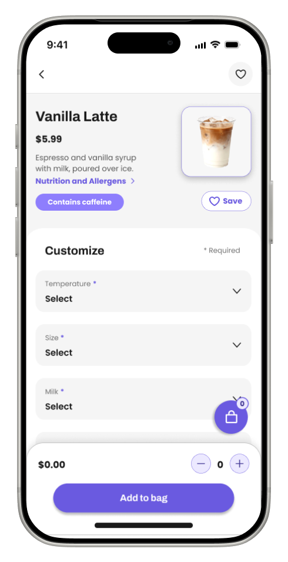
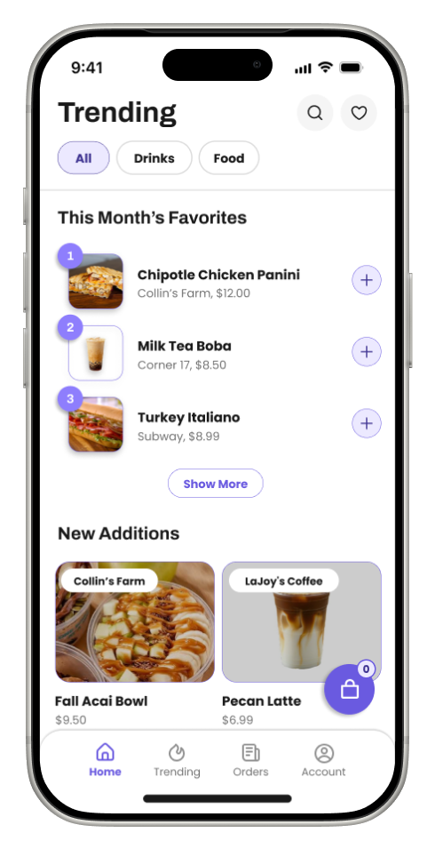
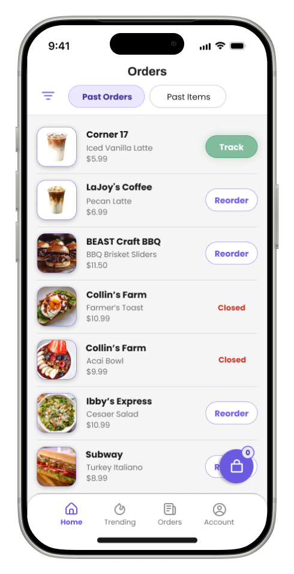
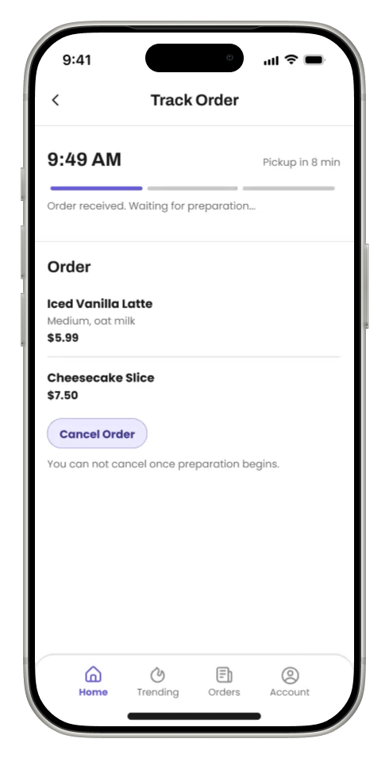
The Process
Low-Fidelity Wireframes
With only a week, I started fast and rough: paper-thin wireframes to lock down the core navigation (home, menu, cart, orders, account) and confirm the campus-dining mental model before touching any color or type.
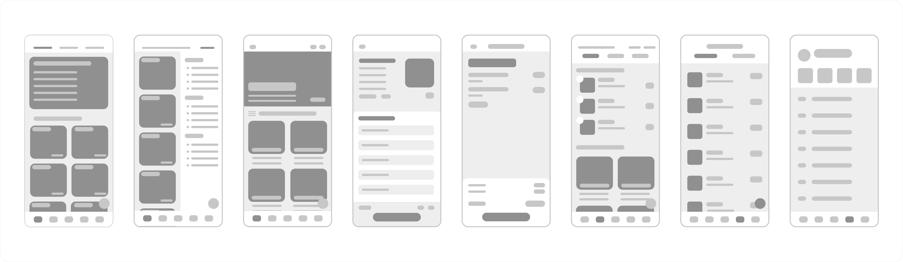
Mid-Fidelity Wireframes
From there I moved into mid-fidelity screens: real content and the new purple palette already in place, so I could pressure-test the full ordering flow, home to checkout, before polishing every visual detail.
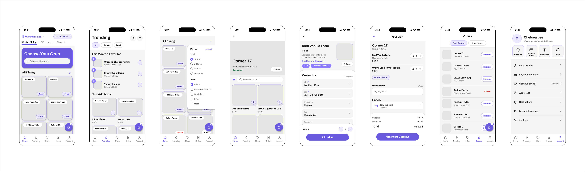
A few of those screens, called out individually:
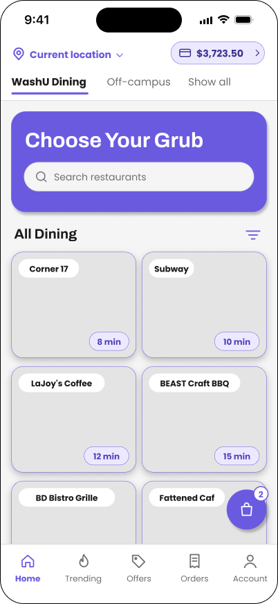
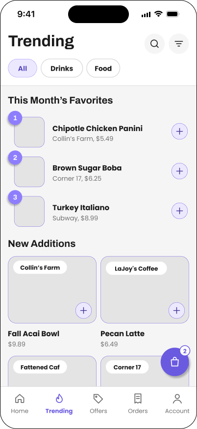
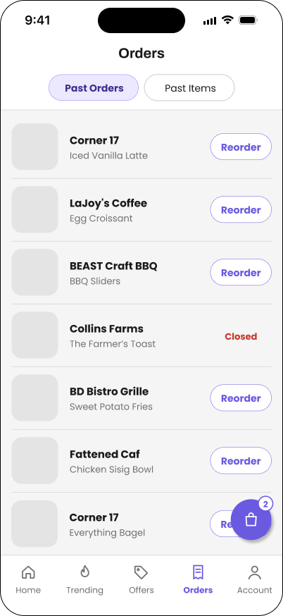
Why Purple Instead of Orange
GrubHub's own brand orange is great for a national delivery app competing for attention in a crowded app store, but it fought with itself on a smaller, single-purpose campus ordering app: at high density (long menus, dense order lists) it read as loud and a little fatiguing rather than energetic. This wasn't an arbitrary swap, either: the audit above found that purple was already the color driving every real interaction in the old app, so I moved the primary palette to a softer purple instead, consolidating what was already there rather than rebranding from scratch.
Full Design System
Rebuilt from scratch around the new purple palette: a light and dark role system, a two-typeface hierarchy, and a small set of consistent button states.
Typography
Two typefaces split the hierarchy cleanly: Archivo for headers, where its weight and structure carry the most visual authority, and Poppins for body copy and micro-text, where its rounder, friendlier shapes stay easy to read at small sizes.
Reflection
-
01
An open-ended prompt is still a prompt. "Redesign the UI" sounds like total freedom, but working solo forced me to write my own brief in week one, pain points, a persona, a rough scope, before I let myself touch a single screen. Skipping that step would have meant redesigning based on my own assumptions instead of real friction points.
-
02
Color decisions need a real reason, not just a preference. Swapping orange for purple was tempting to do purely for differentiation, but it only earned its place once I could point to a concrete problem, orange's contrast breaking down at high menu density, that the new palette actually solved.